Что такое слой?
Начнем раздел основ обработки с одной из самых важной функции фотошопа - слоев. Слой - это часть вашей работы, содержащая в себе определенную информацию, это может быть объект на прозрачном фоне, градиент, цвет. Чтобы легче представить себе слои, можно провести аналогию на прозрачной пищевой пленке. Представим, что Вы хотите нанести на фотографию какой-то узор, чтобы не портить исходное изображение, Вы наносите узор на пленку и клеите ее на Вашу работу. Вы в любой момент можете удалить эту пленку и исходное изображение останется неизменным. Так же и в фотошопе, чтобы нарисовать какой-либо узор или фигуру, наложить на фото градиент, используют слои.
Слой имеет большое количество режимов наложения, которые помогут Вам лучше связать слои, советую попробовать все, перебирая их стрелкой вниз или вверх на клавиатуре.
Чтобы копировать уже существующий слой, необходимо нажать левой кнопкой мыши по выбранному слою и копировать его горячими клавишами “Ctrl + J”
Инструмент “Уровни”
Инструмент “Уровни” предназначен для изменения общей экспозиции фотографии. Вызывается данная функция горячими клавишами [Ctrl + L], или зайдите в создание масок и выберите там “Уровни”.
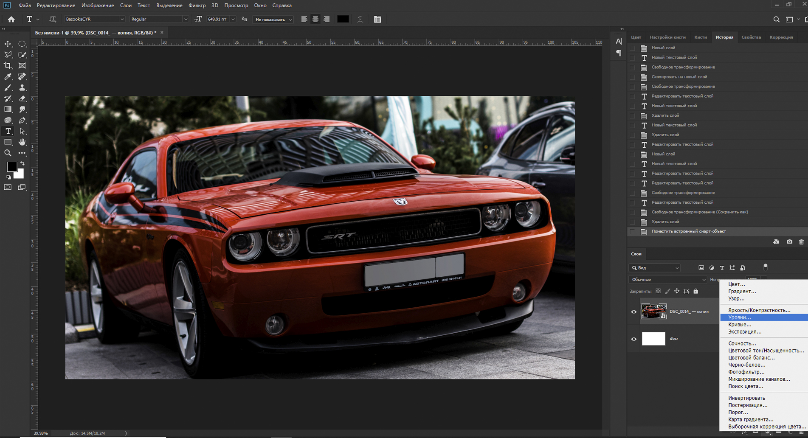
Данный инструмент представляет из себя столбчатую диаграмму с 3-мя ползунками, двигая которые Вы сможете изменять общую экспозицию Вашего изображения. Данная диаграмма строится по количеству пикселей разной яркости, ( слева направо от черного к белому ) что делает ее уникальной для каждой фотографии. Если Вы хотите применить данный инструмент только к одному слою, то следует создать маску “Уровни”, затем нажать правой кнопкой по созданной маске и выбрать пункт “Создать обтравочную маску”.
Инструмент “Кривые”
Данный инструмент нужен для более точной цветокоррекции. Открыв его через [Ctrl + M] или через функцию создания масок, Вы увидите уже знакомую Вам столбчатую диаграмму и прямую линию на ней. Чтобы настроить цветокоррекцию, Вам нужно выбрать один из каналов RGB = Red/Green/Blue ( по умолчанию стоит режим изменения цветокоррекции во всех 3-ех цветовых каналах ). Подробно изучить этот инструмент Вы можете в данном видеоролике: "Ссылка"
Если не вдаваться в подробности, вот Вам пара шаблонов, которые помогут Вам.

Низкая контрастность

увеличение контрастности

увеличение экспозиции

уменьшение контрастности

уменьшение экспозиции
Размытие
Данная функция предназначена для размытия содержимого слоя. Чтобы совершить размытие, нужно зайти во вкладку “Фильтр” и выбрать там “Размытие по Гауссу” и выбрать необходимое для Вас значение радиуса размытия. В следующих уроках, мы будем использовать эту функцию, чтобы отделить главный объект от фона, имитируя портретную съемку с боке, создав глубину изображения.
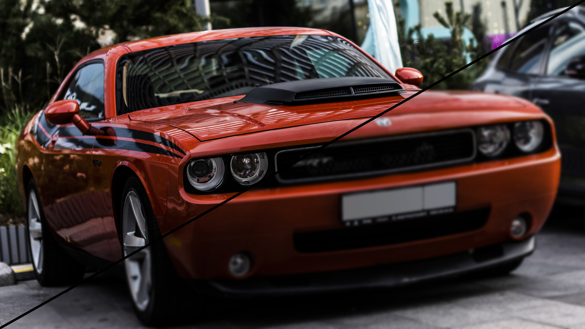
Насыщенность, изменение цветового тона.
Для наиболее легкого изменения насыщенности и цветового тона изображения, можно использовать функцию “Hue and Saturation”, для этого можно воспользоваться горячими клавишами [Ctrl + U]. Перед вами появится окошко с 3-мя ползунками, где первый - изменение цветового тона изображения, второй - изменение насыщенности изображения, третий - яркость изображения.

Баланс белого (White Balance )
Баланс белого - один из важнейших параметров передачи цвета. При неправильном балансе белого, цвета на изображении будут отличаться от настоящих.
Баланс белого можно настроить, как в фильтре “Camera RAW”, так и вызовом функции, вызывающейся горячими клавишами [Ctrl + B]

Фильтр “Camera RAW”
Фильтр “Camera RAW”, встроенный в программу “Adobe Photoshop” уже знаком фотографам, он автоматически открывается при импорте “RAW” изображений в программу.
Этот фильтр можно вызвать и для других форматов изображений. Для этого нужно войти во вкладку “Фильтр”, в верхней панели рабочей среды и выбрать пункт “фильтр Camera RAW”. (Горячие клавиши: [Ctrl + Shift + A])
Перед Вами откроется новое окошко с многочисленным количеством удобных функций, выраженных, в основном, в виде ползунков.
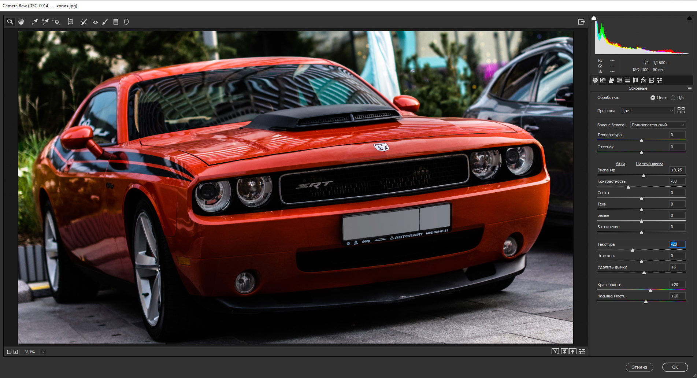
Английские названия функций:
“Temperature”, “Tint” - настройка баланса белого
“Exposure” - изменение экспозиции изображения (яркость)
“Contrast” - изменение контра ста изображения
“Highlights” - изменение яркости светлых участков изображения
“Shadows” - изменение яркости затененных участков изображения
“Clarity” - изменение резкости изображения
“Vibrance” - изменение красочности
“Saturation” - изменение насыщенности
Работа над первым проектом
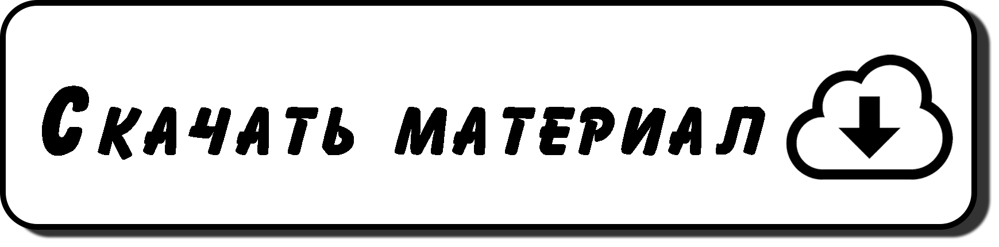
Перед началом Вашей первой практики по обработке фотографии в PhotoShop, загрузите изображение, с которым Вы будете работать, для этого нужно нажать на кнопку “Скачать материал”, после этого на Ваш компьютер загрузится файл с изображением.
Для начала кадрируем фотографию, максимально убирая некрасивую землю с изображения, делая акцент на корабль и море. Чтобы сохранить исходные пропорции при кадрировании фотографии, нужно открыть меню кадрирования и выбрать там пункт “Исходные пропорции” Готово, теперь Вы можете спокойно тянуть рамку инструмента на углы и передвигать ее, чтобы в площади рамки помещалось желаемое откадрированное изображение. Нажимаем “Enter” и фотография кадрируется по заданной рамке.
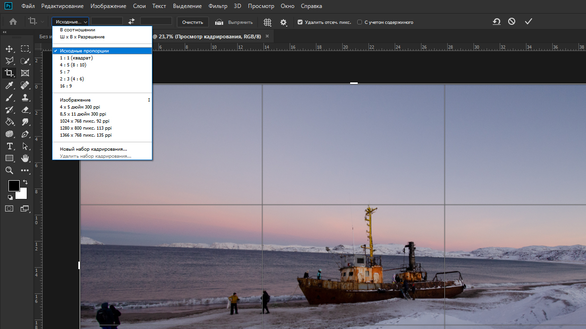
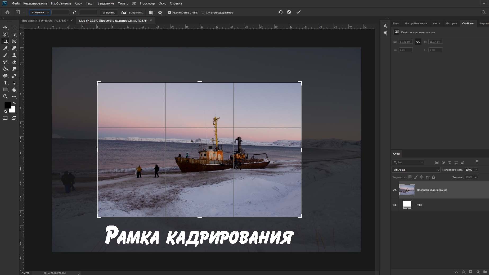
Далее уберем фотографирующихся туристов. Для этого воспользуемся инструментами:
Заплатка - при параметре “Источник” заменяет выделенный участок на другой, выбранный Вами, адаптирует вставленный фрагмент автоматически. При параметре “Назначение” адаптивно дублирует выбранный участок на другое место.
Точечная восстанавливающая кисть - инструмент, служащий для удаления мелких дефектов, таких как акне на лице, тонкие провода или веревки, попавшие в кадр. Для использования инструмента нужно задать размер кисти, немного превышающий размер дефекта, в случае акне, достаточно нажать так, чтобы дефект был в радиусе кисти, а в случае длинных дефектов, необходимо прорисовать вдоль них линию.
Инструментами выделения - любые инструменты выделения, подойдет все от “лассо” до “прямоугольной области”. Чтобы с помощью этих инструментов устранить дефект, нужно выделить участок изображение, несильно превышающий участок дефекта, затем правой кнопкой мыши нажать на выделенную область, выбрать пункт “выполнить заливку”, выбрать в окошке “Содержание” пункт “С учетом содержимого”, нажать на “ОК”
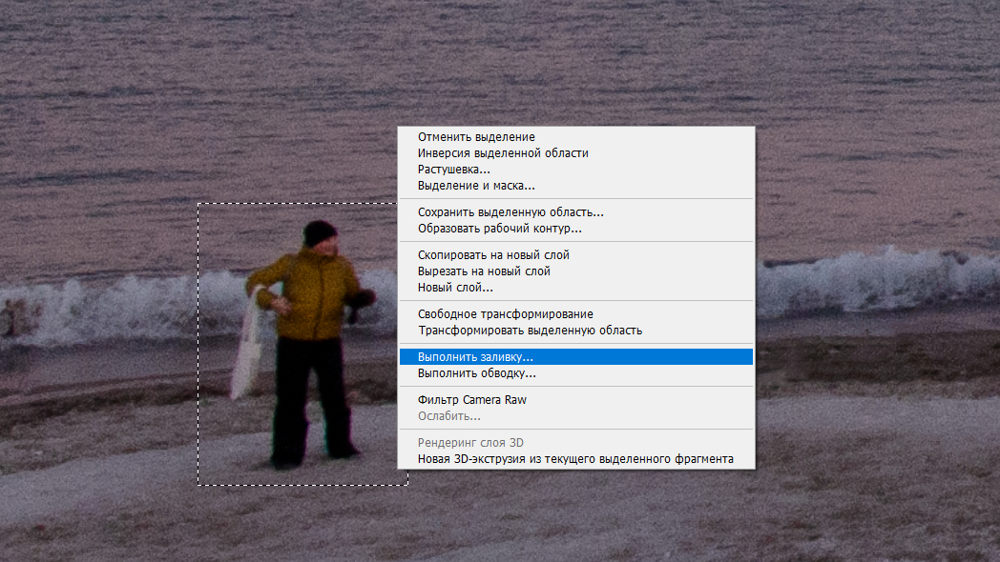
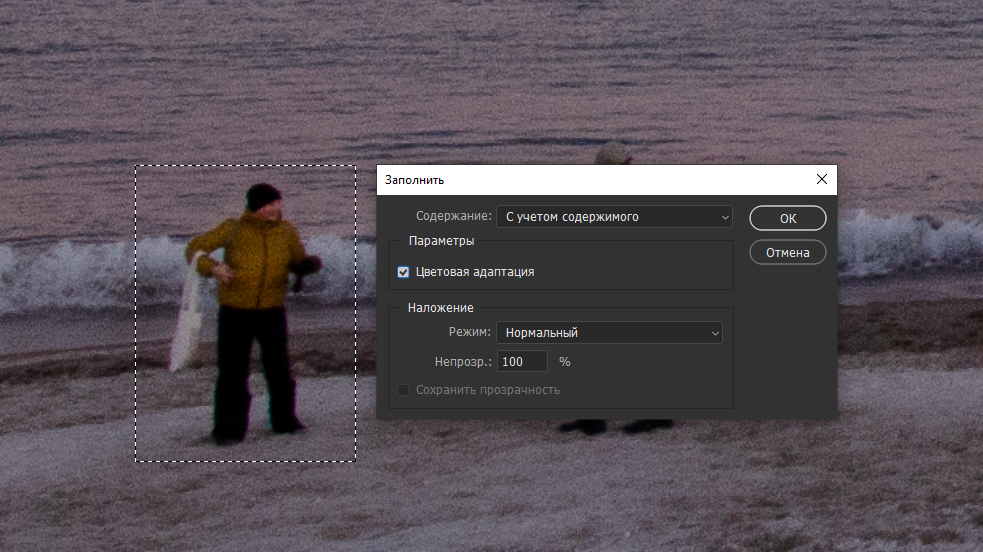
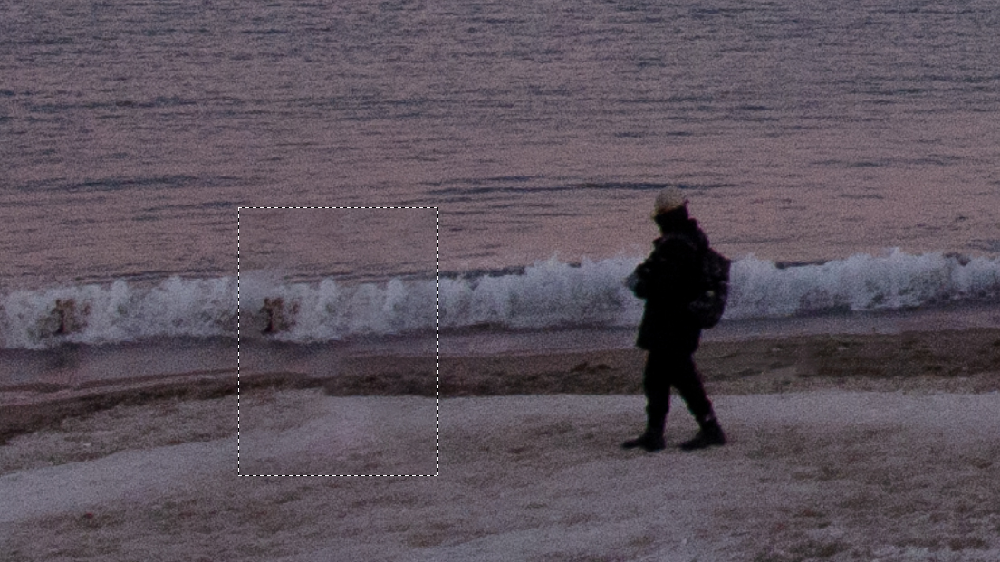
Затем выделяем небо на фотографии, для этого хорошо подойдет инструмент “Быстрое выделение”, ведь сине-розовое небо на фотографии имеет четкую цветовую границу с белым берегом. Чтобы проверить границы выделения, достаточно нажать на кнопку [Q], невыделенная часть изображения будет выделена красным цветом, повторное нажатие на [Q] вернет Вас к выделению.
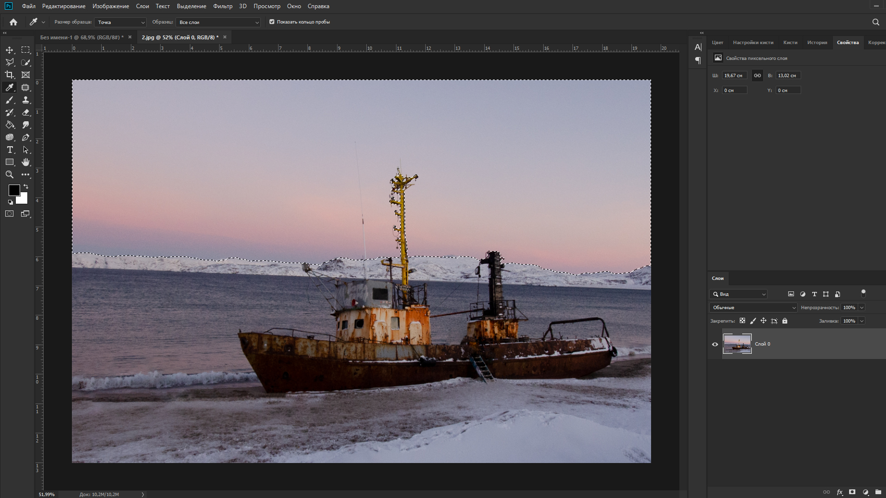
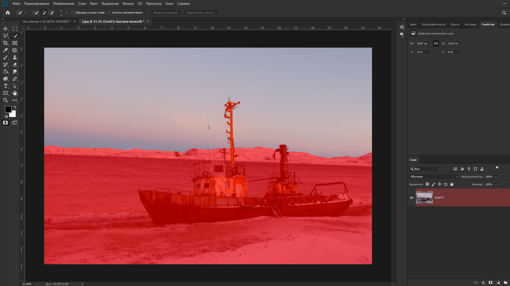
Далее переносим выделенное небо на новый слой, для дальнейшей работы над ним. Чтобы приукрасить небо, вызовем функцию цветового тона и насыщенности [Ctrl + U], на вкус двигаем ползунки и нажимаем “ОК”.
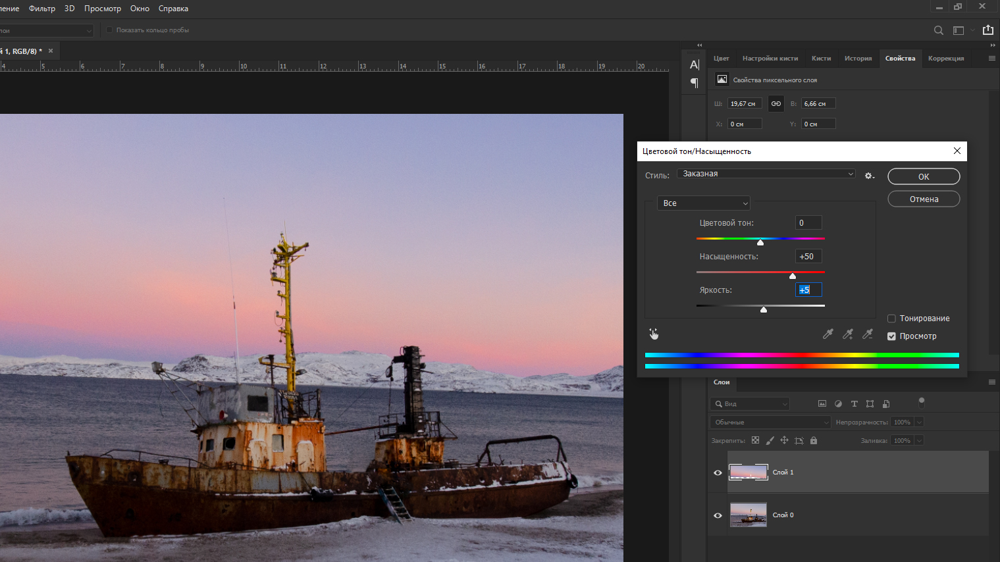
Для более точной цветокоррекции, можно создать маску 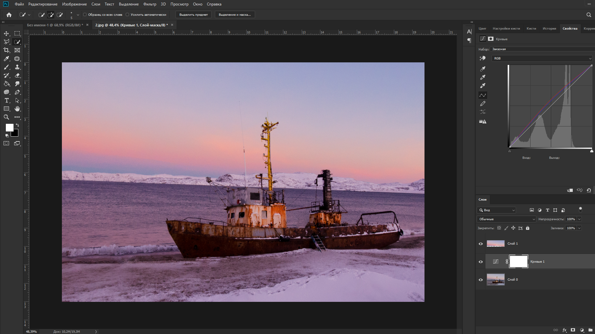
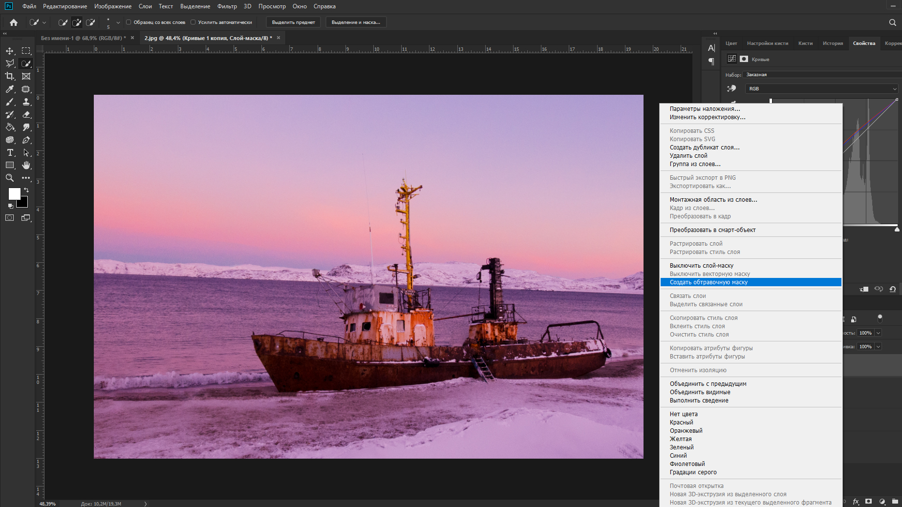
“Кривые”, по умолчанию маска действует на все слои, находящиеся под ней. Чтобы Применить маску на один слой, необходимо нажать правой кнопкой мыши на слой маски и выбрать пункт “Создать обтравочную маску”.
Конечным этапом отредактируем изображение в фильтре “Camera-RAW”, так как данный фильтр работает только с одним слоем, предварительно выберем все слои, (левой кнопкой мыши по каждому слою с зажатой клавишей [Ctrl]) комбинацией клавиш [Ctrl + E], объединим выбранные слои в один. В фильтре по необходимости изменим насыщенность, тон, резкость, контрастность, экспозицию. После настройки нажимаем “ОК”.
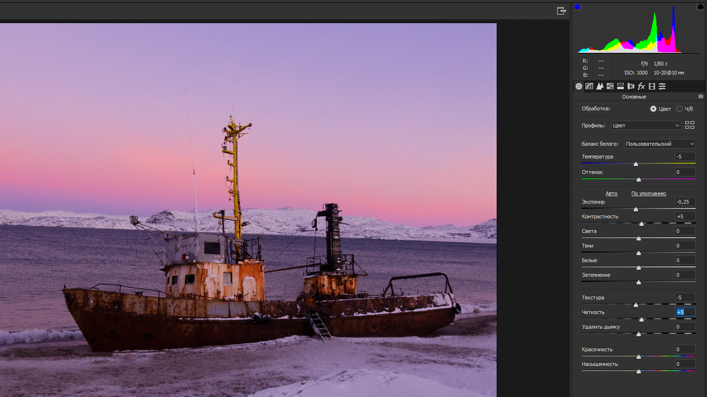
Готово! Осталось экспортировать отредактированное изображение. Для этого можно воспользоваться горячими клавишами [Ctrl + Shift + S]. В появившемся меню вводим название будущего файла с изображением, выбираем формат, нажимаем “Сохранить”.
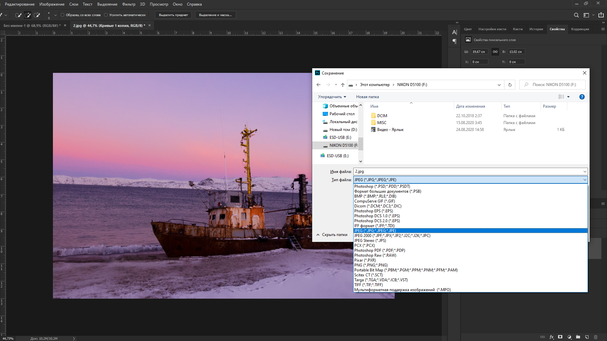
Если у Вас появится данное окошко, советую поставить эти настройки. 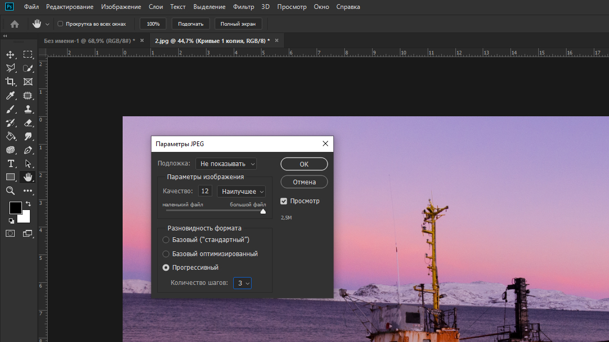